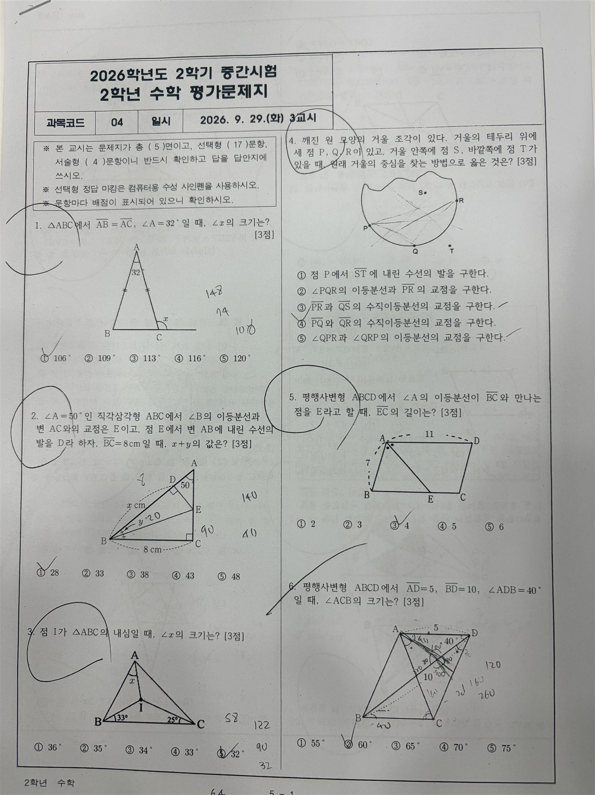
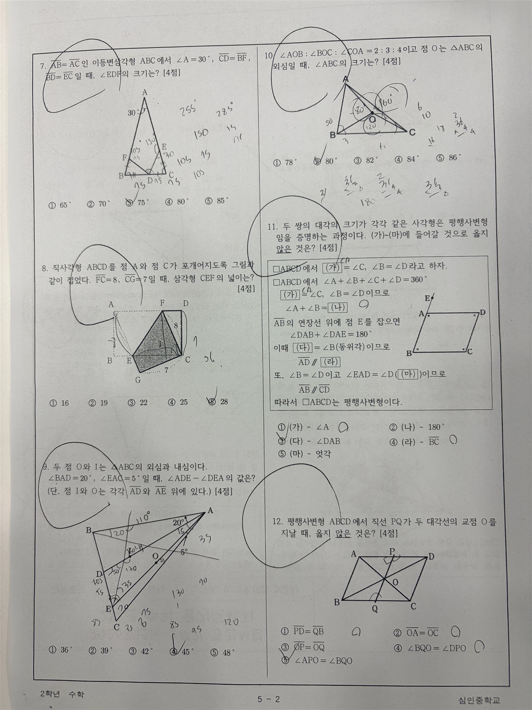
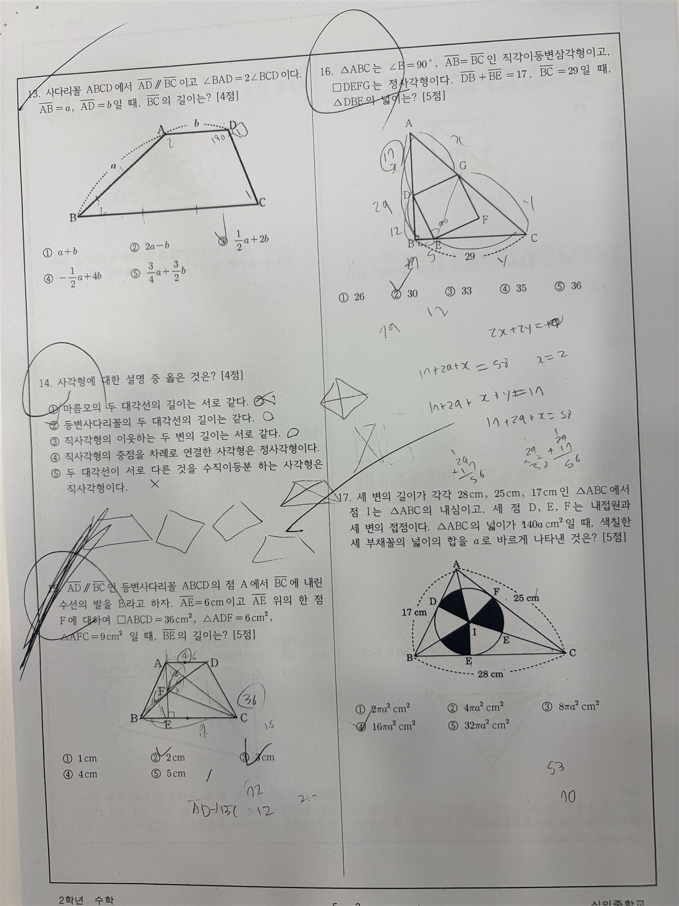
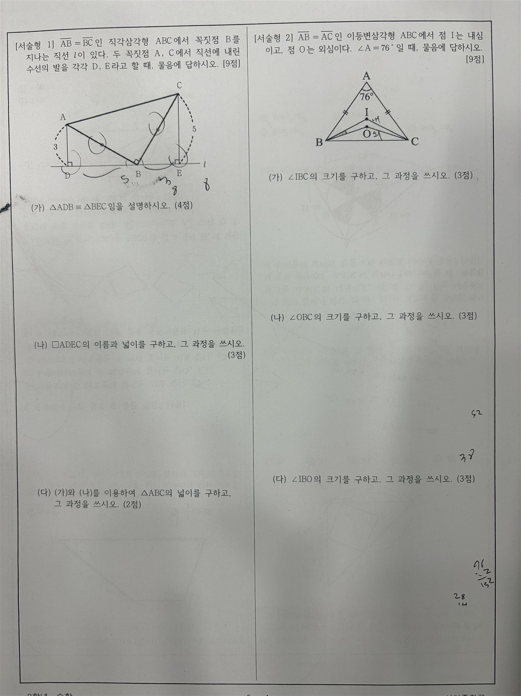
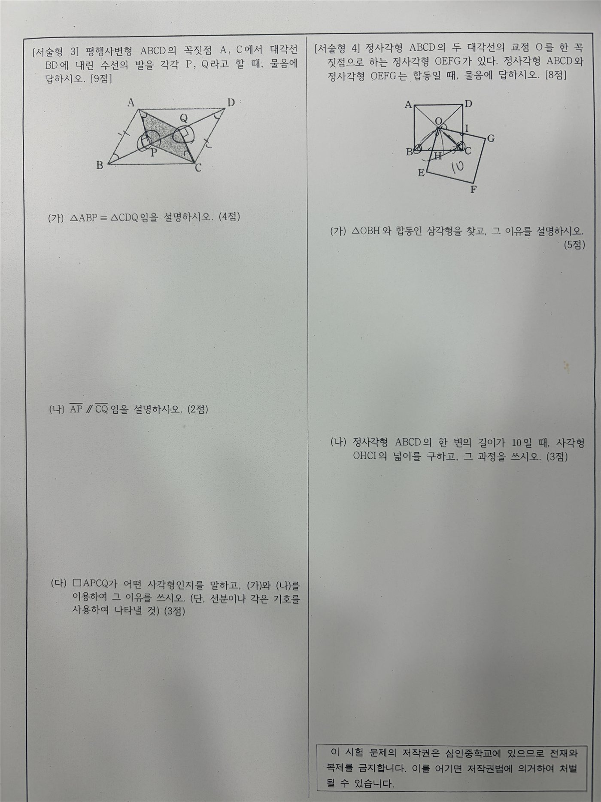

DAY 02수학의 힘 AI 교육특강
시험지·기출문제 분석
문항마다 단원·유형·요구 개념·난이도를 정리하고, 출제 비중을 계산하고, 여러 시험지를 비교해 반복되는 특징을 찾습니다. 마지막에는 분석 결과를 "무엇을 먼저 지도할지"로 연결합니다.
1.오늘의 수업
시험지를 Claude에 올려 표로 정리해 본 원장님·강사님
분석 기준을 직접 정해 요청하고, 숫자는 직접 검산하기
분석 기준을 먼저 제시해 시험지를 분석하고, 결과를 학생 지도 방향으로 연결하기
Claude (claude.ai)
시험지 2개 이상 (비교 실습용). 없으면 3번의 실습 자료를 씁니다.
2.오늘 배우는 내용 & 전체 흐름
3.자료 올리고 분석 기준 정하기
1교시 · 5분
Claude 새 채팅에 시험지를 올리고, 먼저 어떤 기준으로 볼지 정합니다. 모든 시험에 같은 기준을 쓸 필요는 없습니다. 학원에서 실제로 필요한 항목만 고르세요.
실습 자료 — 시험지 사진
내 학원 시험지가 없으면 아래 시험지를 씁니다. 쪽마다 내려받기를 눌러 저장한 뒤, Claude에 모든 쪽을 한 번에 올리세요. 사진을 누르면 크게 볼 수 있어요. 수업 실습용 자료이므로 다른 곳에 올리거나 나눠 주지 않습니다.
시험지 A · 중학교 2학년 수학 (2학기 중간, 선택형 17 + 서술형 4)










시험지 B · 고등학교 2학년 미적분


시작하기 전에 "전체 문항 수와 배점 합계를 먼저 확인해주세요"로 AI가 시험지를 빠짐없이 읽었는지 확인합니다. 시험지 A는 선택형 17 + 서술형 4문항입니다.
4.실습: 단원과 문제유형 분류하기
1교시 · 15분 · 실습 01
같은 단원이라도 묻는 방식은 다릅니다. 문제유형은 정답처럼 하나로 정해지는 값이 아니라서, 분류 기준을 먼저 알려 주는 것이 중요합니다.
분류 결과에 동의하지 않는 문항이 있으면 "○번은 ○○형으로 보는 게 맞을 것 같은데, 원문을 근거로 다시 판단해주세요"처럼 내 판단을 알려 줍니다. 최종 분류는 선생님이 정합니다.
5.실습: 문항별 요구개념 분석하기
1교시 · 10분 · 실습 01 이어서
단원 이름만으로는 학생이 실제로 어떤 개념을 써야 하는지 알기 어렵습니다. 핵심 개념과 함께 필요한 개념을 나눠 봅니다.
| 문항 | 핵심 요구개념 | 함께 필요한 개념 |
|---|---|---|
| 1 | 이등변삼각형의 밑각 | 삼각형의 내각·외각 |
| 2 | 직각삼각형의 합동 | 각의 이등분선 |
| 5 | 평행사변형의 성질 | 이등변삼각형 · 엇각 |
형식 예시입니다. 실제 결과는 시험지를 보고 확인하세요.
6.실습: 기준을 주고 난이도 추정하기
1교시 · 15분 · 실습 02
난이도는 "추정"입니다
절대적인 값이 아니라 정해진 기준에 따른 판단입니다. "상·중·하로 나눠줘"만 쓰면 AI가 기준을 마음대로 정하므로, 판단 기준을 함께 줍니다.
분석표 점검
- 문항이 빠짐없이 분석되었다
- 요구개념이 실제 문제와 맞는다
- 난이도마다 판단 이유가 있고, 내 판단과 크게 다른 문항은 표시해 두었다
7.실습: 출제 비중 계산하고 검산하기
2교시 · 10분 · 실습 03
문항 수가 많다고 해서 시험에서 차지하는 비중이 큰 것은 아닙니다. 문항 수와 배점을 함께 봅니다.
숫자는 직접 검산
- · 문항 수 합계 = 시험지의 전체 문항 수인가?
- · 배점 합계 = 시험지의 총점(보통 100점)인가?
- · 비율 하나를 계산기로 직접 계산해 맞는지 확인하기
8.실습: 여러 기출 비교하기
2교시 · 15분 · 실습 04
한 번의 시험으로는 경향을 알기 어렵습니다. 두 개 이상의 시험지를 새 채팅에 함께 올려 반복되는 특징을 찾습니다. (실습 자료 A·B는 학년이 달라서 "구성 방식"을 비교하는 연습으로 씁니다. 같은 학교·같은 학년 기출이 있으면 그것으로 비교하세요.)
"최근 3개 시험에서 삼각형의 합동을 활용하는 문항이 각 시험에 2문항 이상 포함되어 있다."
"다음 시험에서도 삼각형의 합동 문제가 반드시 출제될 것이다."
AI가 단정하는 표현을 쓰면 "미래 시험을 예측하지 말고, 제공된 시험지에서 실제 확인되는 특징만 다시 정리해주세요"라고 고칩니다.
9.실습: 분석을 지도 방향으로 연결하기
2교시 · 10분 · 실습 05
분석의 목적은 표가 아니라 학생이 무엇을 먼저 준비해야 하는지 정하는 것입니다.
| 분석 결과 | 지도 방향 |
|---|---|
| 특정 단원의 출제 비중이 높음 | 그 단원의 기본 개념과 대표 유형부터 점검 |
| 중·상 문항에서 개념을 연결하는 문제가 반복됨 | 단일 개념 문제 다음에 복합 유형 연습 늘리기 |
| 서술형에서 풀이 근거 작성이 반복적으로 요구됨 | 정답뿐 아니라 풀이 과정과 근거 쓰는 연습 |
한 학생의 오답과 연결하기 (선택)
시험 분석 결과와 학생 A의 오답 문항을 함께 비교해주세요. 틀린 문항: 3번, 7번, 12번, 15번 1. 오답 문항의 공통 단원 2. 반복되는 요구개념 3. 문제유형의 공통점 4. 우선 복습할 내용 5. 다음 학습 때 확인할 내용 학생의 능력이나 성격을 추측하지 말고, 제공된 시험 결과와 오답 정보만 사용해주세요.
학생 이름 대신 "학생 A"처럼 씁니다. 시험 한 번으로 학생의 실력을 단정할 수 없으므로, AI의 결과는 지도 초안으로만 쓰고 최종 판단은 실제 풀이 과정을 보고 정합니다.
10.실습: 나만의 기출 분석 요청문 만들기
2교시 · 15분 · 실습 06
단계에 익숙해졌다면 하나의 요청으로 묶습니다. 내 학원에서 실제로 보고 싶은 항목만 골라 넣으세요.
최종 점검
- 배점 합계와 비율 계산이 맞다
- 여러 시험 비교가 실제 자료에 근거한다
- 미래 출제를 단정하는 표현이 없다
- 지도 방향이 분석 결과와 이어진다
11.막혔을 때
| 이럴 때 | 이렇게 |
|---|---|
| 배점을 잘못 읽었어요 | "문항마다 시험지에 적힌 배점을 그대로 옮겨 적고, 합계를 계산해주세요"로 먼저 배점표만 받기 |
| 난이도가 내 생각과 달라요 | 정상입니다. 기준을 더 구체적으로 고치고, 최종 판단은 선생님이 합니다 |
| 두 시험지가 섞여서 분석돼요 | "첫 번째로 올린 사진 5장은 시험 A, 다음 4장은 시험 B"처럼 먼저 구분해 주기 |
12.오늘의 결과물
13.오늘의 핵심 & 다음 수업
핵심 — 시험 분석의 목적은 표를 만드는 것이 아니라 실제 지도에 쓰는 것입니다.
DAY 03 — 학원 홍보 랜딩페이지 제작
Claude로 학원 홍보용 1페이지 웹사이트를 기획하고 만들고 고친 뒤, 인터넷에 올려 주소로 접속해 봅니다.